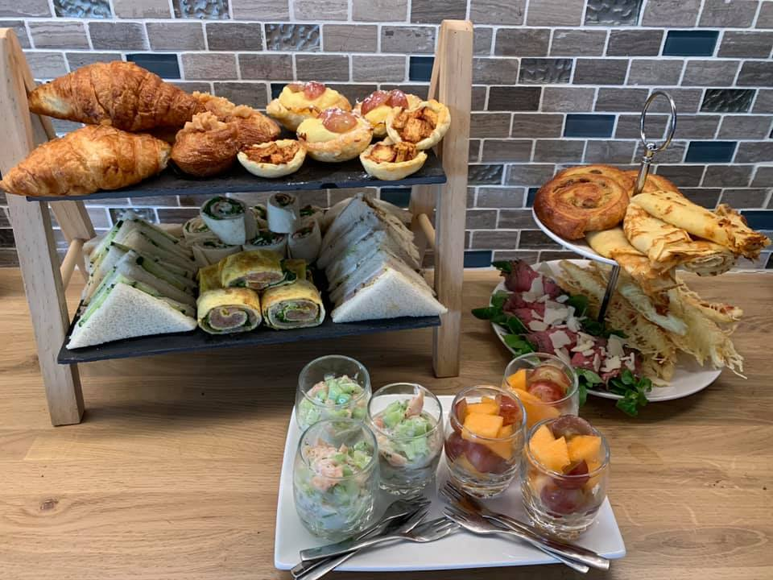
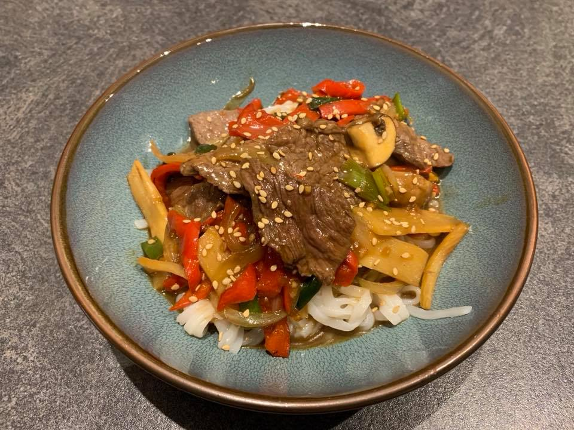

Les apéro-box
blabla22

Les Brunchs
learn to

Plats sur mesure
code in london
blabla22
learn to
code in london
Je m’appelle Marjolijn Straus et suis originaire des Pays-Bas. J’habite en France depuis 2011 et connais l’attachement des Français à la gastronomie. Une des mes passions est la cuisine que j’aime partager pour apporter du bonheur grâce à mes plats originaux. Ma spécialité est la cuisine indonésienneJe prépare également des plats du monde (Inde, Maroc, Afrique de sud, Mexicain) et bien sûr des spécialités régionales (mon hachis parmentier de canard est plus que validé par mes clients!) Un de mes proches souffrant de la maladie de Cœliaque, j’ai plongé dans le ‘monde sans gluten’. Mes plans de travail sont séparés, les outils de cuisine séparés et les ingrédients et les plats ne sont pas en contact avec des produits qui contenant du gluten afin d’eviter toute contamination. Consommateur de sans gluten mais amateur de petits plats, vous êtes à la bonne adresse!! Pas envie de cuisiner? Pas le temps de concocter de bons plats pour vos invités? Envie d’originalité pour vos apéros dînatoires? Quelqu’en soit la raison, la citoyenne du monde que je suis, offrira à vos papilles un voyage enchanteur.... Contactez-moi!!!